案例研究Case Study
IDT Australia
制药企业官网 UI/UX 重构Pharma Corporate Website Redesign
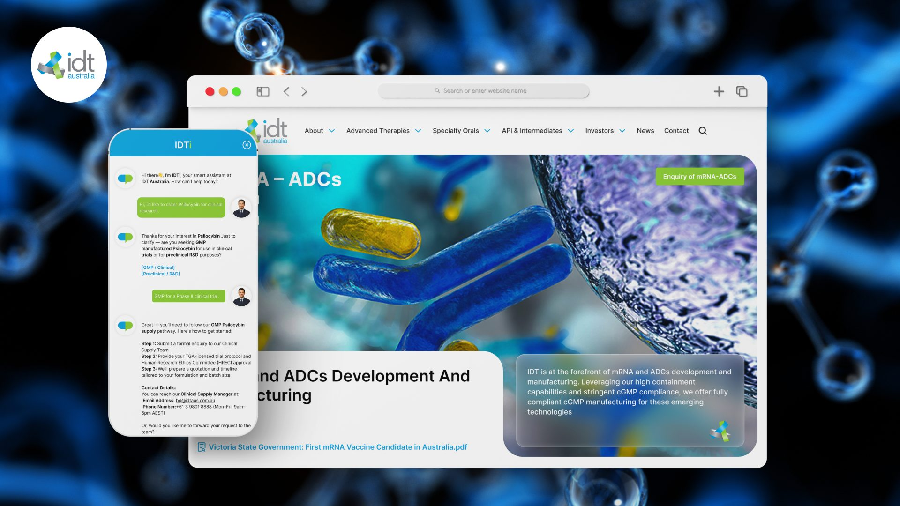
项目概述Overview
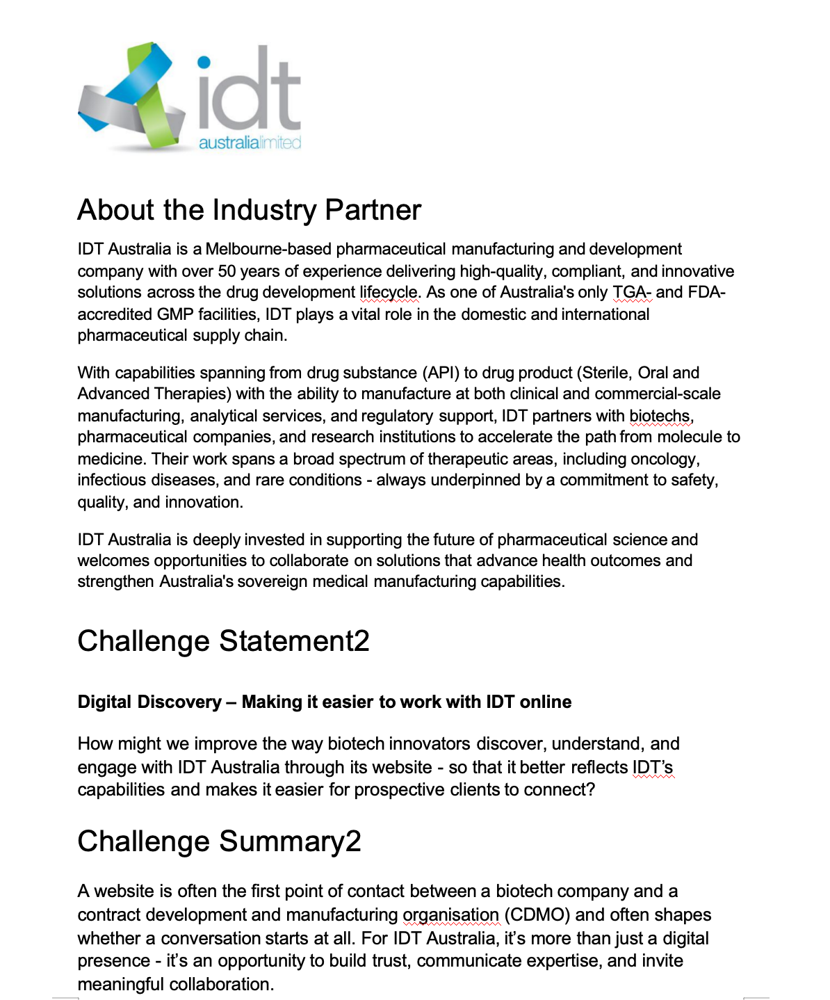
本项目为 IDT Australia（墨尔本制药 CDMO）交付的官网 UX 重设计。由莫纳什大学跨学科团队承接，整合设计、信息技术、药学与战略传播视角，围绕 IDT 的业务目标与数字沟通需求展开，最终成果向 IDT 管理层正式汇报。 A website UX redesign delivered for IDT Australia, a Melbourne-based pharma CDMO. Carried out by a cross-disciplinary Monash University team spanning design, IT, pharmacy, and strategic communication, the work was grounded in IDT's business goals and digital communication needs, and presented to IDT leadership.
项目起点来自校企合作的正式任务书，核心挑战被定义为 Digital Discovery — Making it easier to work with IDT online：如何让生物科技初创公司更顺畅地在官网发现、理解 IDT 的服务能力，并建立联系。任务书同时指出，网站往往是 Biotech 与 CDMO 的首次接触点，它不仅是数字名片，更是建立信任、传递专业能力、邀请深度合作的关键入口。 The project began with a formal industry partnership brief. The core challenge was framed as Digital Discovery — Making it easier to work with IDT online: how might biotech innovators discover, understand, and engage with IDT through the website. The brief also emphasized that the website is often the first point of contact between a biotech company and a CDMO — not just a digital presence, but a key entry point for building trust, communicating expertise, and inviting meaningful collaboration.
- 角色Role
- UX/UI 交互设计师（跨职能协作）UX/UI Interaction Designer (cross-functional)
- 周期Duration
- 5–6 周5–6 weeks
- 类型Type
- 校企合作 · B2B 官网设计Industry collaboration · B2B website
- 年份Year
- 2025
- 工具Tools
- Figma · ProtoPie
- 合作方Partner
- IDT Australia（墨尔本制药 CDMO，50+ 年经验 · TGA/FDA 认证 GMP 设施）IDT Australia (Melbourne pharma CDMO, 50+ years · TGA/FDA-accredited GMP facilities)
客户背景Client Context
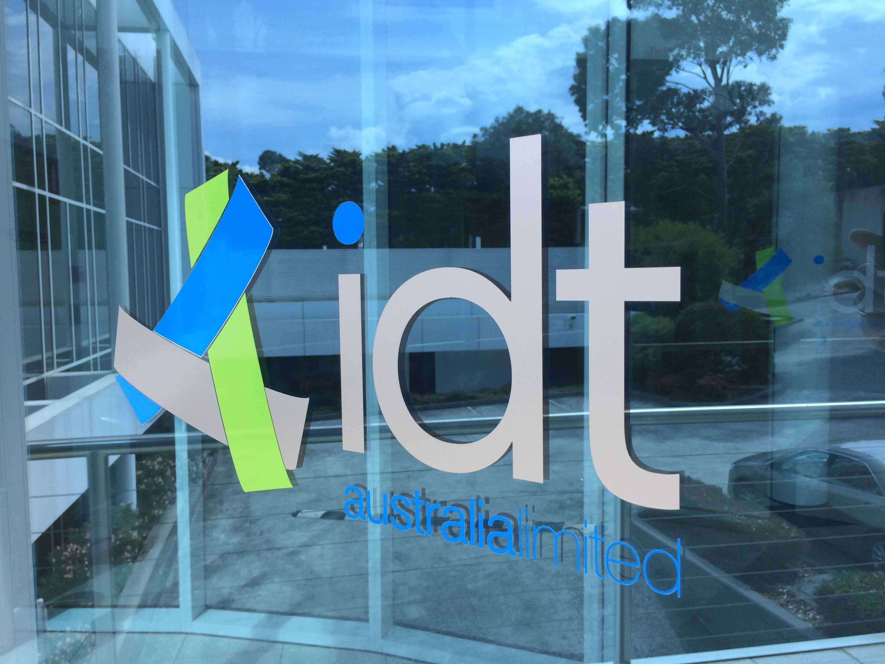
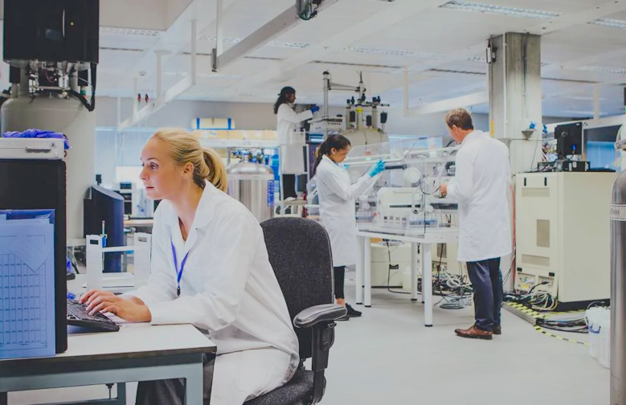
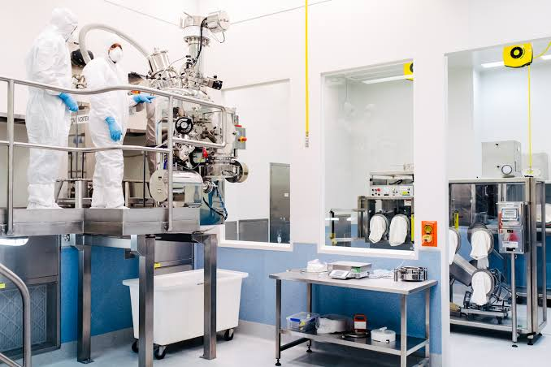
IDT Australia 是一家总部位于墨尔本的制药 CDMO（合同开发与生产组织），拥有 50 余年行业经验。在高度监管的制药环境中，IDT 提供从原料药（API）到成品制剂的端到端制造服务。其服务体系覆盖范围广、技术复杂，这也为数字沟通带来挑战——如何在官网等数字渠道中清晰传达服务重点、核心能力与差异化价值，成为本项目需要重点回应的问题。 IDT Australia is a Melbourne-based pharmaceutical CDMO with over 50 years of industry experience. In a highly regulated environment, they provide end-to-end services from API to finished dosage manufacturing. Their broad, technically complex service system creates a communication challenge: how to clearly convey service focus, core capabilities, and differentiated value through digital channels.
团队介绍The Team
项目由莫纳什大学跨学科团队交付，成员涵盖设计、信息技术、药学与战略传播，协同支撑从用户调研到设计落地的完整流程。Delivered by a cross-disciplinary Monash University team spanning design, IT, pharmacy, and strategic communication—driving the full journey from user research to design delivery.
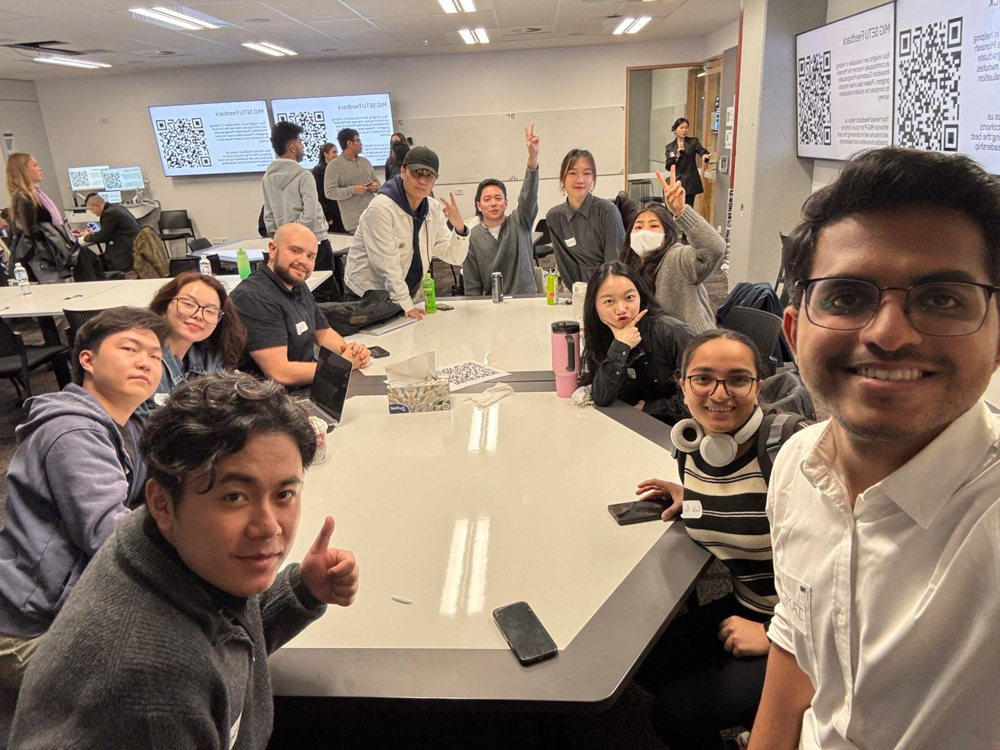
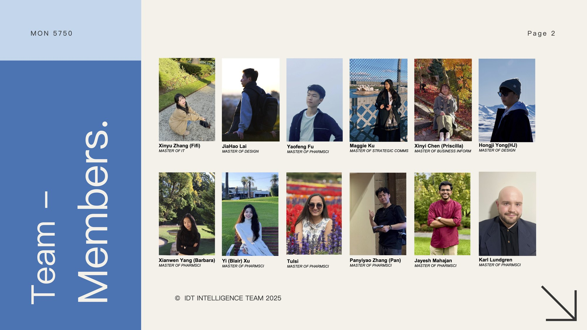
设计挑战Design Challenge
对于生物科技公司而言，官网往往是与潜在合作伙伴的首次接触点。它不仅是一个数字存在，更是建立信任、传递专业能力、邀请有意义合作的入口。 For biotech companies, the corporate website is often the first point of contact with potential partners. It's more than a digital presence—it's an opportunity to build trust, communicate expertise, and invite meaningful collaboration.
「我们需要一个能够清晰传达自身能力的网站，同时支持新老客户，并在用户首次访问时就让合作变得更容易。」 "We need a website that can clearly convey our capabilities, while supporting both new and existing customers, and making collaboration easier on first visit."
研究与发现Research & Discovery
所有设计策略均建立在真实业务语境与一手调研之上。我们实地参观墨尔本制药工厂、与 IDT 管理层深度访谈，并借助商业画布（Lean Canvas）将零散洞察系统收敛为清晰的设计方向。Every design strategy was grounded in real business context and first-hand research. We visited the Melbourne manufacturing facility, interviewed IDT leadership, and used a Lean Canvas to converge scattered insights into clear design directions.
利益相关者访谈Stakeholder Interviews
在 IDT 现场与 COO、商务总监、商业合作经理等关键利益相关者深度访谈，识别出「战略重点不清」「核心服务发现成本高」「联系路径模糊」三大关键问题。On-site at IDT, in-depth interviews with the COO, Commercial Director and Partnership Manager surfaced three core issues: unclear strategic focus, high friction in discovering core services, and ambiguous contact pathways.
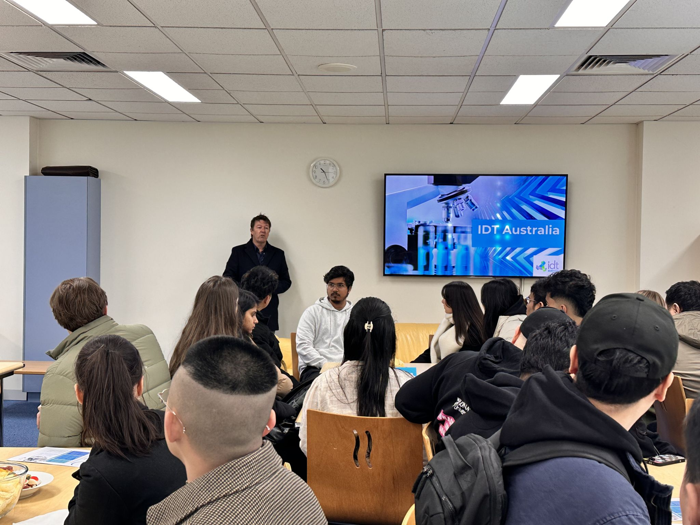
实地工厂考察Factory Site Visit
实地考察 GMP 生产车间与生产流程，理解 API、mRNA、ADC 等业务的真实制造语境，为官网信息架构提供可信赖的一手素材与行业话语体系。On-site visits to GMP manufacturing areas and workflows built an authentic understanding of API, mRNA, and ADC operations—providing credible content and industry vocabulary for the website architecture.
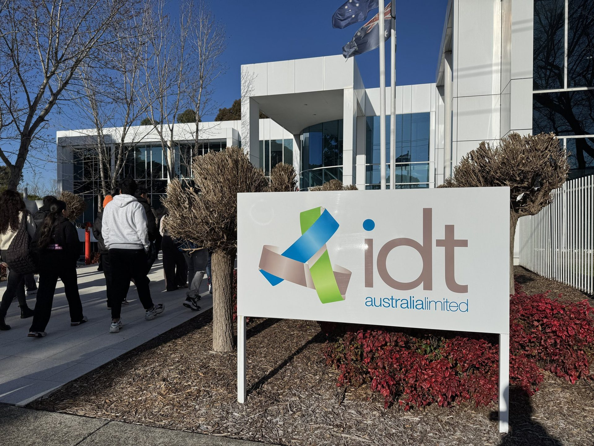
洞察 → 策略（商业画布）Insights → Strategy (Lean Canvas)
将访谈与现场观察聚类后，用 Lean Canvas 收敛为三项设计策略：明确战略重点、前置核心服务、降低参与门槛，直接回应 IDT 管理层提出的业务诉求。Clustering interview and site-visit findings into a Lean Canvas produced three strategies—clarify strategic focus, front-load core services, lower engagement barriers—directly addressing leadership's business goals.
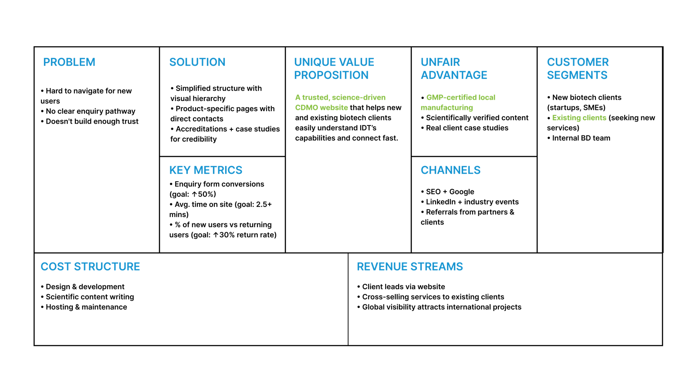
UX 策略UX Strategy
基于研究与发现阶段的一手洞察，我们将 IDT 的业务重点转化为以下三项轻量化策略，直接回应管理层提出的核心诉求。 Built on first-hand insights from the research phase, we translated IDT's business priorities into three lightweight strategies that directly answer leadership's core goals.
明确战略重点Clarify Strategic Focus
在首页优先呈现 mRNA 与 ADC 等增长型能力，让访客首访即理解 IDT 的核心优势与方向。Front-load growth capabilities like mRNA & ADC on the homepage so visitors grasp IDT's strengths and direction on first visit.
前置核心服务Front-load Core Services
将 API 制造与研发服务提前呈现，显著降低用户寻找关键信息的成本与路径长度。Surface API manufacturing and R&D services early, sharply reducing the cost and path length of finding key information.
降低参与门槛Lower Engagement Barriers
以清晰的联系路径叠加聊天机器人引导，让新老客户都能轻量地发起合作与咨询。Clear contact pathways plus a chatbot guide let both new and existing clients start collaboration and queries lightly.
规划与资源Planning & Resources
策略落地离不开清晰的预算与资源盘算。我们以商业画布推导范围，并据此规划预算分配、对接关键资源与利益相关方，确保方案在真实组织约束下可执行。Strategy execution depends on clear budgeting and resource mapping. We derived scope from the business canvas, then planned budget allocation and aligned key resources and stakeholders so the solution stays executable within real organizational constraints.
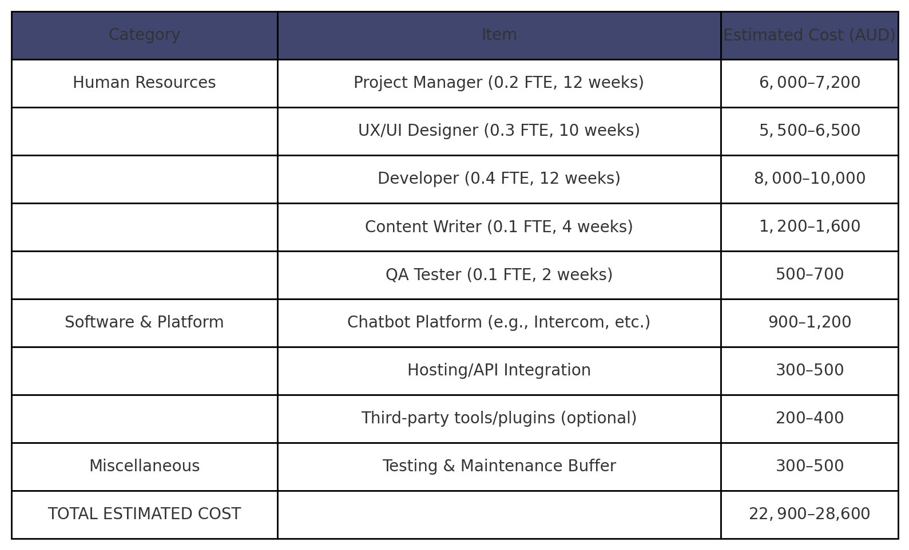
预算分析Budget Estimate
按范围与阶段盘算投入，让设计决策有成本边界可依。Scope- and phase-based investment planning gives design decisions a cost boundary to respect.
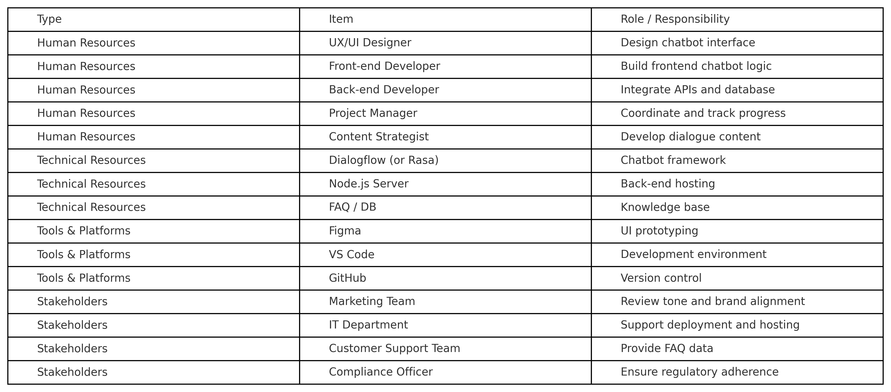
资源与利益相关方Resources & Stakeholders
对齐内部能力与外部协作方，明确谁为方案落地提供保障。Align internal capability and external partners to clarify who backs execution.
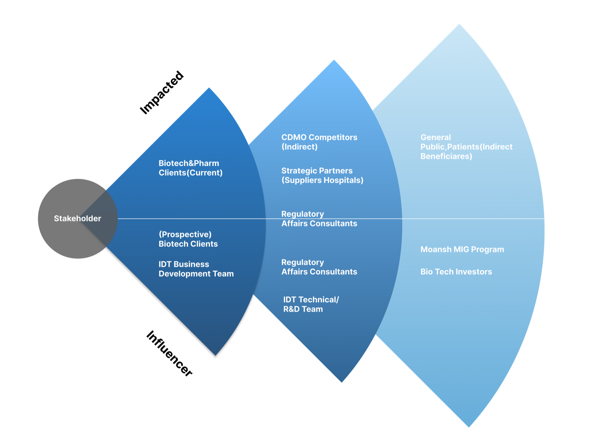
利益相关方影响矩阵Stakeholder Influence Map
区分决策与协作关键人，指导沟通与推进节奏。Separate decision-makers from collaborators to guide communication and momentum.
用户旅程与使用场景User Journey & Usage Scenarios
我们将抽象策略落到真实使用脉络：用户旅程图描绘从「首次访问」到「建立合作」的完整体验路径，使用场景图则锚定医护与商务两类核心角色的典型任务情境。We grounded abstract strategy in real usage: the journey map traces the full path from first visit to partnership, while scenario maps anchor typical tasks for clinical and commercial user roles.
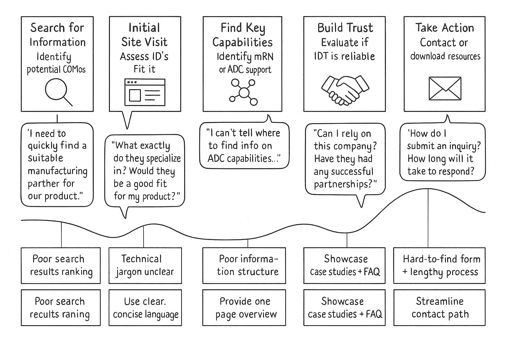
用户旅程图User Journey Map
首访 → 探索能力 → 发起联系 → 建立合作，逐阶段暴露痛点与机会。First visit → explore capabilities → reach out → partner, exposing pain points and opportunities per stage.
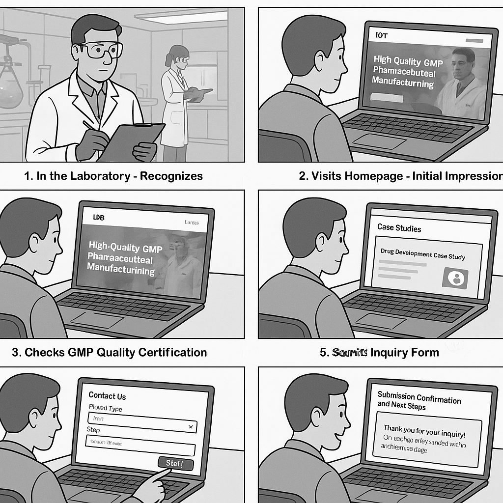
使用场景图Usage Scenarios
锚定医护与商务两类核心角色，明确各自的高频任务与决策情境。Anchors clinical and commercial roles, clarifying their high-frequency tasks and decision contexts.
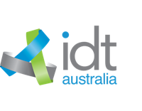
方案Solution
每个设计决策都直接回应了 IDT 管理层的业务诉求。我们针对三位关键相关方提出的具体问题，逐一给出对应的界面方案——从战略能力前置，到核心制造能力呈现，再到降低参与门槛的智能客服。 Every design decision directly answered IDT leadership's business needs. We addressed each specific problem raised by three key stakeholders with a corresponding interface solution—from front-loading strategic capabilities, to showcasing core manufacturing, to lowering engagement barriers with an AI assistant.
「mRNA 和 ADC 正在成为我们商业增长中越来越重要的方向。」 "mRNA and ADC are becoming increasingly important directions for our business growth."
针对这一战略重点，我们在首页优先呈现 mRNA 与 ADC 能力，让访客首访即理解 IDT 的增长方向，并单独设立能力模块深入展示。 For this strategic priority, we front-loaded mRNA & ADC capabilities on the homepage so visitors immediately grasp IDT's growth direction, with a dedicated module for depth.
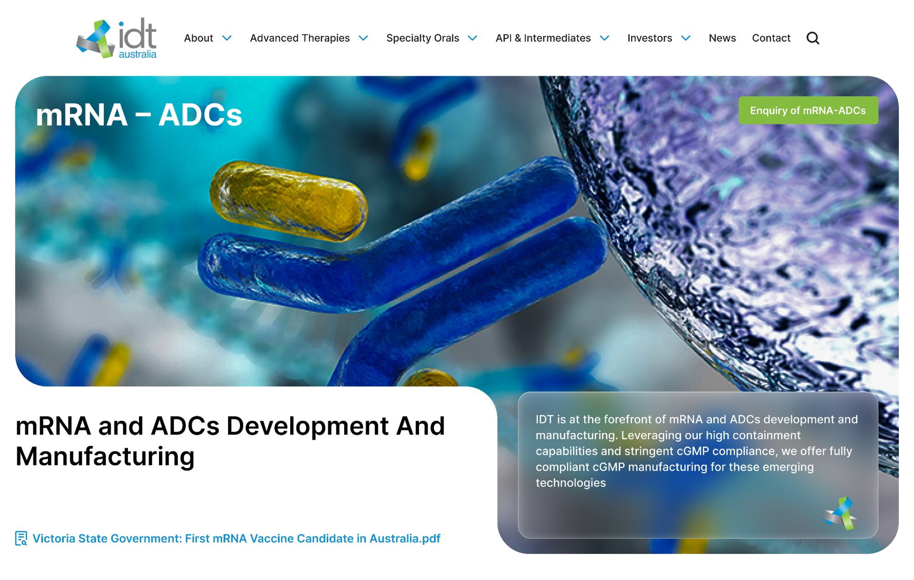
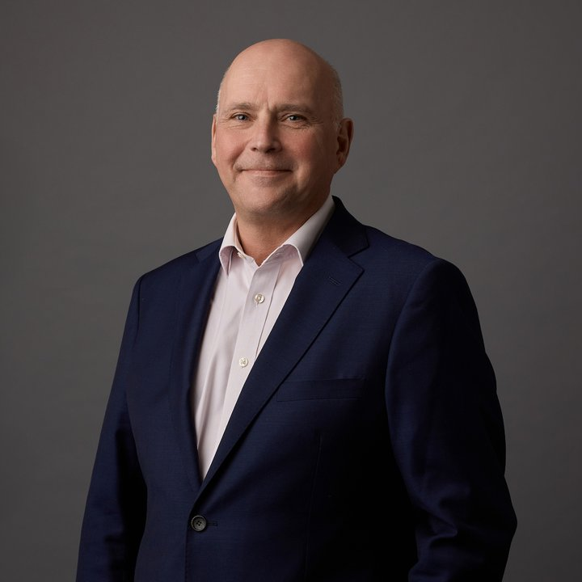
「许多客户选择我们是因为 API 制造能力，他们希望快速了解我们的经验，并清楚下一步如何建立联系。」 "Many clients choose us because of our API manufacturing capabilities. They hope we can quickly understand their needs and clearly outline next steps."
我们将API 制造能力模块前置至首页核心位置，并配套清晰的联系路径，让客户即时感知 IDT 的核心竞争力与行业可信度。 We front-loaded the API manufacturing module into the homepage's core area with a clear contact pathway, making IDT's core competency and credibility immediately visible.
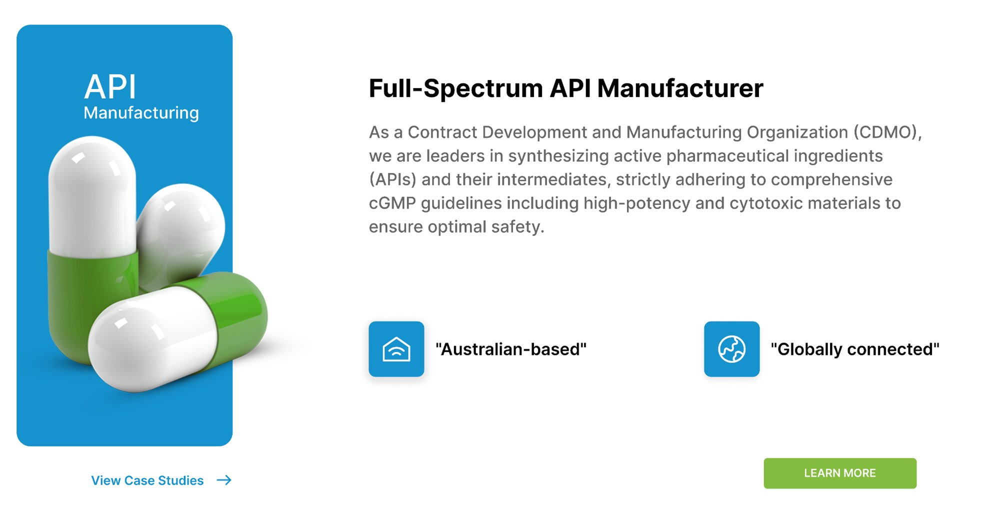
「我们经常收到一些本可以通过基础信息解决的咨询，但仍需人工跟进处理。」 "We often receive inquiries that could be resolved through basic information, but they still require manual processing."
为此我们引入AI 聊天机器人用于早期咨询的自助解答，并以关于页强化企业可信度，引导用户自主获取信息、降低人工工作量。 We introduced an AI chatbot for self-service early inquiries, and used the About page to build credibility—guiding users to find information autonomously and reducing manual workload.
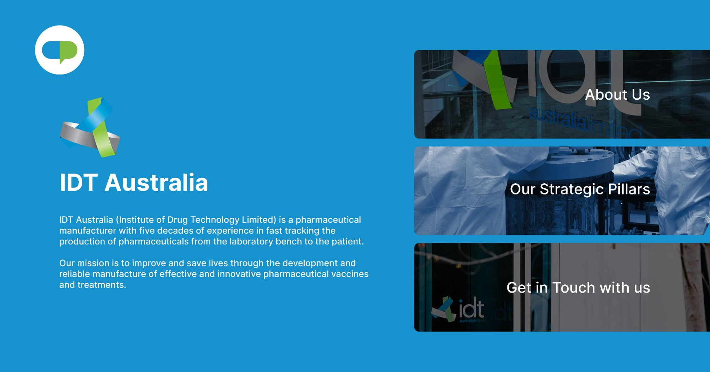
IDT 智能客服IDT AI Assistant
智能客服以对话式引导用户完成初步咨询与联系，把原本需要人工跟进的基础问题前置自助化，有效减轻销售协调团队的事务性负担。 The conversational assistant guides users through initial inquiries and contact, front-loading routine questions that previously required manual follow-up—effectively reducing the sales coordination team's operational load.
IDT 智能客服嵌入官网，提供 7×24 的初步咨询与联系引导，让用户无需等待即可获取基础信息。Embedded across the site, the IDT assistant offers 24/7 initial inquiry and contact guidance so users get basics without waiting.
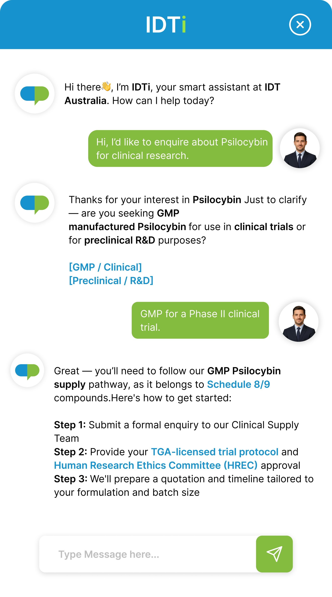
落地网页 · 首页全貌Delivered Site · Homepage
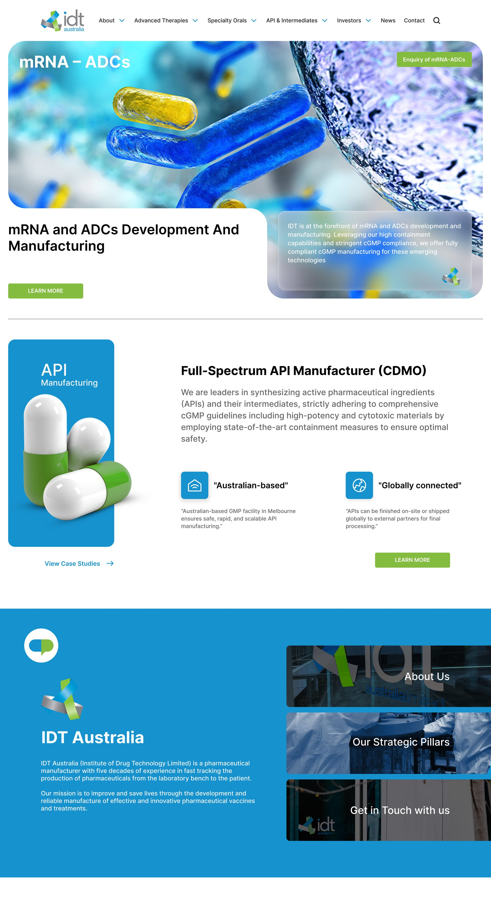
验证 · 点击测试Validation · Click Tests
测试一：首页战略入口Test 1: Homepage Strategic Entry
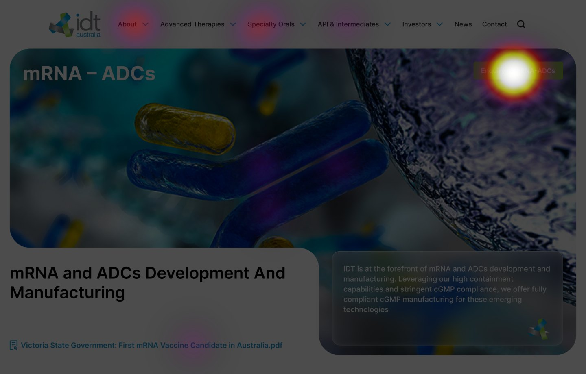
- 任务Task
- 找到 mRNA / ADCs 信息Find mRNA / ADCs info
- 样本量N
- 15 人
- 有效点击率Success rate
- 80%
- 平均操作时间Avg time
- 20s
测试二：联系路径Test 2: Contact Pathway
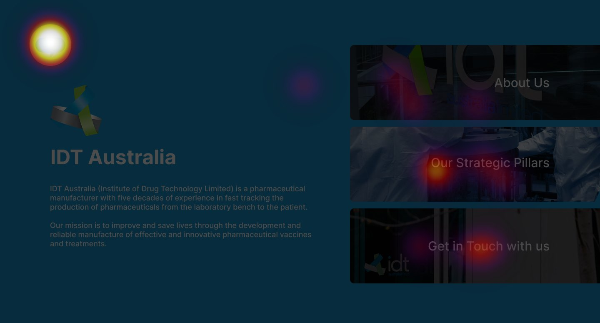
- 任务Task
- 发起联系或使用聊天机器人Contact or use chatbot
- 样本量N
- 15 人
- 有效点击率Success rate
- 70%
- 平均操作时间Avg time
- 8s
两轮点击测试覆盖「战略入口」与「联系路径」两条关键任务：核心信息任务成功率分别达 80% 与 70%，平均操作时间压缩至 20s 与 8s——相比原有邮件 / 电话人工跟进（约 1–2 天），关键信息获取门槛被显著降低。完整测试幻灯片直观呈现了测试问题、样本、成功率与操作时间，以及用户在首页与聊天机器人上的有效点击集中区。Two click-test rounds covered the "strategic entry" and "contact pathway" tasks: core-info success rates reached 80% and 70%, with average task time cut to 20s and 8s—versus the old 1–2 day email/phone follow-up, the barrier to key info dropped sharply. The full test slides present the task, sample size, success rate, and time alongside the heatmaps showing where users clicked most on the homepage and the chatbot.
成果Results
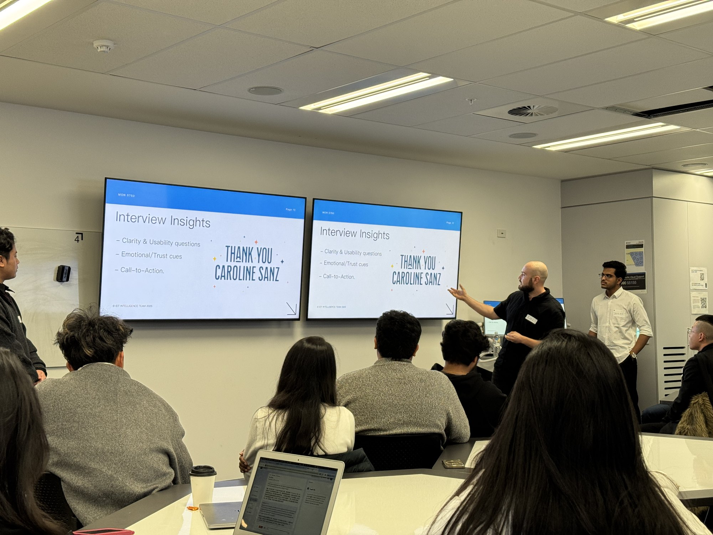
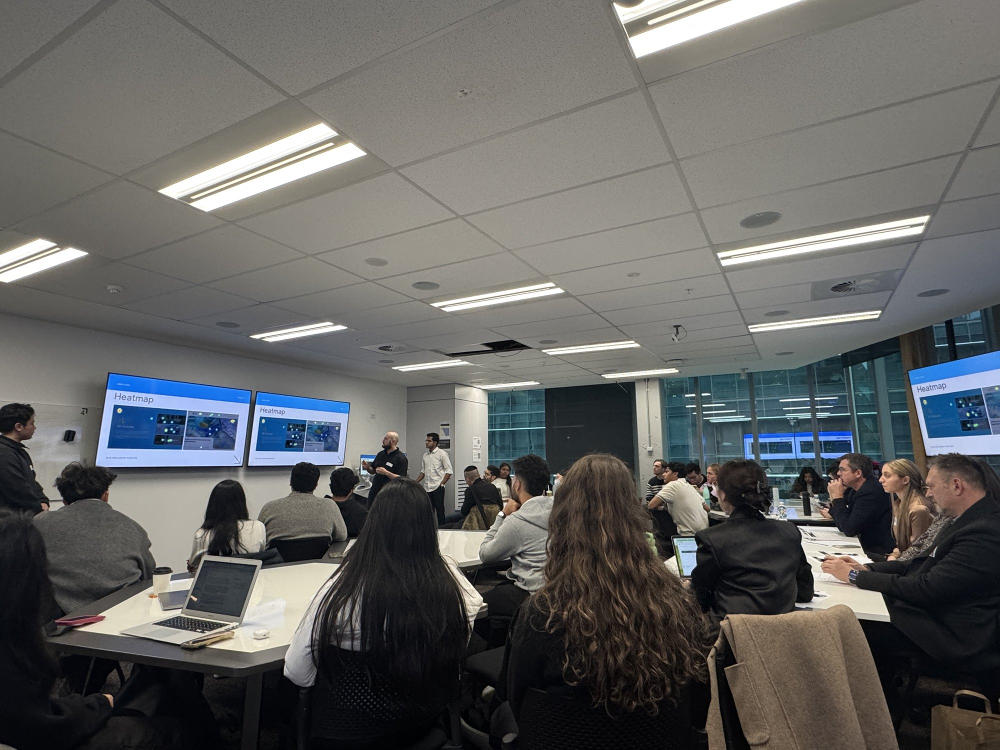
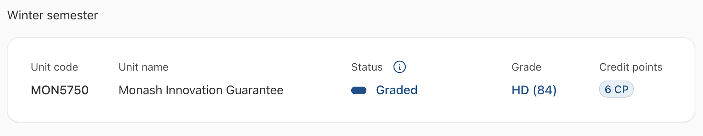
从战略信息架构到 AI 客服原型，这套重设计在 IDT 真实业务语境中形成了完整闭环，并最终获得管理层正式认可——对一次学业项目而言，是难得的「准商业化」交付体验。From strategic information architecture to the AI assistant prototype, the redesign formed a complete loop in IDT's real business context and earned formal leadership endorsement—a rare, near-commercial delivery experience for a student project.
项目为 IDT Australia 带来的业务价值Business value delivered for IDT Australia
注：以下运营指标为基于用户测试与项目假设的估算值。Note: figures below are estimates from usability testing and project assumptions.
战略能力触达Strategic visibility
核心信息任务成功率（用户测试）。首屏前置 mRNA/ADC 战略重心，访客首次访问即理解 IDT 增长方向，相关板块点击触达较改造前显著提升。Core-info task success rate in usability tests. Front-loading mRNA/ADC priorities on the homepage lifts reached of strategic sections vs. the old site.
信息获取效率Faster access
平均获取关键信息仅需 20s，相较原邮件 / 电话人工跟进流程（约 1–2 天），效率提升约 99%。Key info in ~20s vs. the old 1–2 day email/phone follow-up—roughly a 99% speed-up.
运营成本优化Lower cost
AI 客服预处理基础咨询，预计减少销售协调团队约 40% 重复咨询量，释放人力服务高价值客户，降低沟通成本。The AI assistant pre-handles FAQs, cutting ~40% of repetitive inquiries to the sales coordination team and lowering communication cost.
综上，重设计不仅强化了 IDT 的品牌表达与关键信息效率，更以可量化的方式改善其客户沟通与运营成本——设计价值最终落在了业务结果上。In sum, the redesign strengthens IDT's brand expression and key-info efficiency while improving client communication and operating cost in measurable terms—design value landed on business outcomes.
项目反思Reflection
这是一次对商业化交付项目的真实接触。与课堂练习不同，项目需要在 IDT 真实的组织语境、业务目标与合规约束下推进，并直接面向管理层汇报。过程中我积累了「把业务战略转译为信息架构」「用原型而非文档沟通」「以用户测试验证假设」的经验，也更体会到 UX 设计师在 B 端交付中扮演的「业务翻译者」角色——既要理解制药 CDMO 的专业语境，也要让外部伙伴在首访即读懂价值。后续我会更主动地在早期纳入技术可行性与运营落地视角，让设计不仅好看，更能稳妥落地。This was a real encounter with commercial delivery. Unlike coursework, the project advanced within IDT's actual organizational context, business goals, and compliance constraints, and was presented directly to leadership. I gained experience translating business strategy into information architecture, communicating through prototypes rather than documents, and validating assumptions with usability testing—and a sharper sense of the UX designer as a "business translator" in B2B delivery. Going forward I'll bring technical feasibility and operational rollout into the conversation earlier, so designs aren't just beautiful but also reliably shippable.